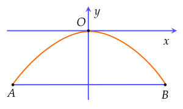

Câu 12. Đại số
Phần II — Trắc nghiệm trả lời ngắn
0,57 điểm
Cho phương trình $x^2+ax+b=0$ có hai nghiệm là $2$ và $-1$ . Khi đó giá trị biểu thức $A=a^2+b^2$ bằng bao nhiêu ?
Trả lời ngắn — gõ kết quả, kèm đơn vị nếu đề hỏi đơn vị.
Câu 13. Hình họcKhông vẽ hình
Phần II — Trắc nghiệm trả lời ngắn
0,57 điểm
Một sân trường hình chữ nhật có chu vi $140$ m. Biết chiều dài hơn chiều rộng là $30$ m. Chiều dài sân trường bằng bao nhiêu m?
Trả lời ngắn — gõ kết quả, kèm đơn vị nếu đề hỏi đơn vị.
Câu 14. Hình họcCó vẽ hình
Phần II — Trắc nghiệm trả lời ngắn
0,57 điểm
Nước từ vòi phun nước (đặt cách mặt nước $0,2$ m) được phun lên cao sẽ đạt một độ cao nào đó rồi rơi xuống. Giả sử nước được phun từ đầu vòi phun (vị trí $A$ ) và rơi xuống vị trí $B$ . Đường đi của nước là một phần của parabol dạng $y=-\dfrac{1}{8}x^2$ trong hệ trục tọa độ $Oxy$ với $O$ là điểm cao nhất của nước được phun ra so với mặt nước, trục $Ox$ song song với $AB$ và $x,\,y$ tính bằng đơn vị mét.

Biết $AB=12$ m. Chiều cao $h$ từ điểm $O$ đến mặt nước bằng bao nhiêu m?
Trả lời ngắn — gõ kết quả, kèm đơn vị nếu đề hỏi đơn vị.
Câu 15. Hình họcKhông vẽ hình
Phần II — Trắc nghiệm trả lời ngắn
0,57 điểm
Cho tam giác $ABC$ vuông tại $A$ . Điểm $E$ di động trên cạnh $AB$ , qua $B$ vẽ một đường thẳng vuông góc với $CE$ tại $D$ và cắt tia $CA$ tại $H$ . Biết $\widehat{BCA}=30°$ , số đo $\widehat{HDA}$ bằng bao nhiêu độ?
Trả lời ngắn — gõ kết quả, kèm đơn vị nếu đề hỏi đơn vị.
Câu 16. Đại số
Phần III — Tự luận
2,29 điểm
Cho phương trình $x^2-(2~m+5 )x+2~m+1=0$ . Tìm $m$ để phương trình có hai nghiệm phân biệt $x_1, \, x_2$ mà biểu thức $M= | \sqrt{x_1}-\sqrt{x_2} | $ đạt giá trị nhỏ nhất.
Bài làm của bạn:
Câu 17. Hình họcKhông vẽ hình
Phần III — Tự luận
2,29 điểm
Cho tam giác $ABC$ nhọn $(AB\lt AC )$ nội tiếp đường tròn $(O).$ Hai đường cao $BE$ và $CF$ của tam giác $ABC$ cắt nhau tại điểm $H$ . Gọi $K$ là trung điểm $BC.$
a) Chứng minh $\Delta AEF \backsim \Delta ABC.$
b) Chứng minh đường thẳng $OA\bot EF.$
c) Đường phân giác góc $FHB$ cắt $AB$ và $AC$ lần lượt tại $M$ và $N$ . Gọi $I$ là trung điểm của $MN,\,J$ là trung điểm của $AH$ . Chứng minh tứ giác $AFHI$ nội tiếp và ba điểm $I,\,J,\,K$ thẳng hàng.
Bài làm của bạn: